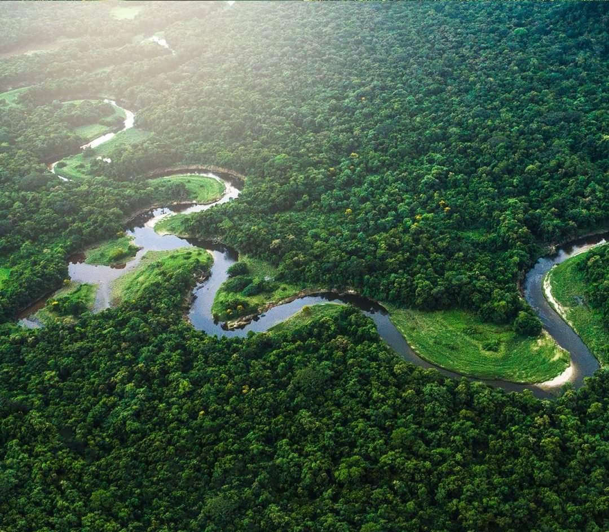

Biosfera Del Rio Platano
La Reserva de la Biosfera del Río Plátano ubicada en el corazón de La Mosquitia hondureña,
es parte del Corredor Biológico Mesoamericano y abarca aproximadamente 8,000 km2.
Es un sitio de orgullo nacional por su diversidad cultural y biológica.
El Río Plátano alberga importantes áreas marinas costeras y coralinas,
y una variedad de hábitat, que incluyen extensos bosques lluviosos, sabanas de pino, manglares, y cayos.
El 50 por ciento de los ecosistemas de Honduras están representados en el siete por ciento del territorio nacional que representa la Biosfera de Río Plátano.
Esta región es además, el hogar de cinco pueblos diferenciados,
los indígenas miskitos, tawahkas y pechs, los garífunas y los mestizos, comunidades que todavía conservan las tradiciones y estilo de vida de sus antepasados.
La riqueza cultural es parte del interés de numerosos arqueólogos en la zona, debido a los misteriosos petroglifos a lo largo de las riveras de los ríos.
Las leyendas locales hablan de la existencia de una gran ciudad ancestral, llamada "Ciudad Blanca" que ha despertado múltiples exploraciones en la selva de la Reserva.
Por su incalculable belleza natural, la Reserva de la Biosfera del Río Plátano fue inscrita por la UNESCO en la lista de Sitios de Patrimonio Mundial en 1982.
Esta categoría es una herramienta para fomentar la protección de lugares excepcionales en el mundo e incluye sitios famosos tales como las pirámides de Egipto,
el Taj Majal de la India y las Islas Galápagos de Ecuador.
Sin embargo, pese a todos los esfuerzos realizados por el Gobierno de la República de conservar y proteger está belleza escénica,
la Biosfera del Río Plátano sigue expuesta a serias amenazas incluyendo el maderero indiscriminado y la expansión de la frontera agrícola con cambio de cobertura forestal para potreros.
Los caminos abiertos para maderero profundizan la especulación de la tierra, y el tráfico de flora, fauna, y piezas arqueológicas.
